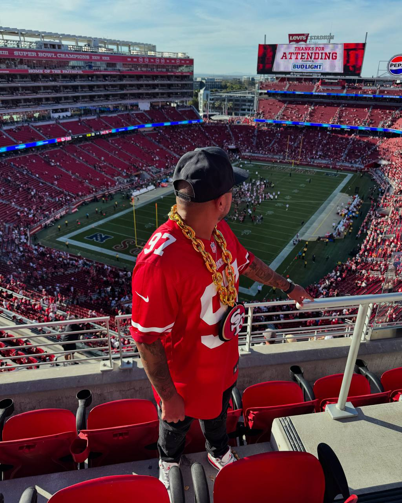

Los San Francisco 49ers son uno de los equipos más históricos y reconocidos de la NFL. Fundados en 1946, se convirtieron en el primer equipo de fútbol americano profesional de San Francisco y han logrado consolidar una de las bases de aficionados más apasionadas. Su nombre hace referencia a los buscadores de oro de 1849 en California, un símbolo de esfuerzo y perseverancia que se refleja en su identidad como equipo.
Durante la década de los 80 y principios de los 90, los 49ers vivieron su época dorada, siendo liderados por grandes figuras como Joe Montana, Jerry Rice y Steve Young. Gracias a ellos conquistaron varios Super Bowls y se ganaron la reputación de ser una de las franquicias más exitosas y espectaculares de la liga. Su estilo de juego ofensivo marcó una era y dejó un legado difícil de igualar en la NFL.
Hoy en día, los 49ers siguen siendo protagonistas y uno de los equipos más competitivos. Con sede en el Levi’s Stadium en Santa Clara, California, la franquicia continúa atrayendo a miles de fanáticos cada temporada. Sus recientes apariciones en finales de conferencia y Super Bowls han demostrado que la tradición y la ambición siguen vivas, manteniendo a los 49ers como un símbolo de orgullo no solo para San Francisco, sino para toda la NFL.

Me considero una persona curiosa y apasionada por aprender cosas nuevas. Siempre busco experiencias que me permitan crecer, ya sea a través de los viajes, el estudio o los retos que se presentan en la vida diaria. Disfruto conocer diferentes culturas, personas y formas de pensar, porque creo que cada vivencia aporta una lección y una oportunidad para mejorar.
También me caracterizo por ser perseverante y comprometido con lo que me propongo. Cuando tengo una meta, trabajo con dedicación hasta alcanzarla, siempre con una actitud positiva y abierta al cambio. Me gusta rodearme de personas que sumen y que compartan la misma energía, porque creo que la colaboración y el respeto son claves para lograr cualquier objetivo.